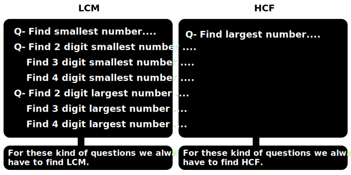

Unit 1
Test of Divisibility
If a number is given and we want to know which number can divide it, there are some rules:
- 2: All even numbers are divisible by 2.
- 3: If the sum of digits is divisible by 3, then that number will be divisible by 3. For example, in 4331, 4+3+3+1 = 11, which is not divisible by 3, so 4331 is not divisible by 3. On the other hand, for 4332, 4+3+3+2 = 12, which is divisible by 3, so 4332 is also divisible by 3.
- 4: Check the last 2 digits. If the last 2 digits are divisible by 4, then the whole number will be divisible by 4. For example, in 136, 36 is divisible by 4, so 136 is also divisible by 4.
- 5: Ends in 0 or 5.
- 6: If a number is divisible by both 2 and 3, then it will be divisible by 6 as well.
- 7: Double the last digit and subtract it from the remaining digits. If the result is divisible by 7, then the whole number is divisible by 7. For example, in 427, double the last digit 7 (7 * 2 = 14) and subtract it from the remaining digits 42 (42 - 14 = 28), which is divisible by 7, so 427 is divisible by 7.
- 8: Check the last 3 digits. If the last 3 digits are divisible by 8, then the whole number will be divisible by 8. For example, in 1064, 064 is divisible by 8, so 1064 is also divisible by 8.
- 9: The sum of digits should be a multiple of 9. For example, in 5283, 5+2+8+3 = 18, which is divisible by 9, so 5283 is also divisible by 9.
- 11: If the sum of the odd digits minus the sum of the even digits is a multiple of 11 or 0, then the number is divisible by 11. For example, in 121, 1+1 - 2 = 0, hence it is divisible by 11.
- 12: If a number is divisible by both 3 and 4, then it will be divisible by 12.
Questions
- Which of the following numbers is exactly divisible by 4?
- 1246
- 1248
- 1245
- 1250
- The largest five digit number 786x6 which is exactly divisible by 4. Then find the value of
x.
- 7
- 5
- 9
- 3
- Which of the following numbers is divisible by 8?
- 723856
- 72854
- 72858
- 72852
- The greatest six digit number 78968x which is exactly divisible by 8 then what is the value
of x?
- 6
- 8
- 4
- 2
-
Which of the following numbers is exactly divisible by 3?
- 45789
- 45788
- 45787
- 45785
-
The largest five digit number 7569x which is completely divisibly by 3 then what is the value of
x?
- 6
- 9
- 8
- 5
-
If the 3 digits number 2x3 is divisible by 3 then what is the value of x2 + x
(consider the maximum value of x).
- 7
- 20
- 56
- 2
-
Which of the following is exactly divisible by 9?
- 457893
- 457892
- 45890
- 457891
-
The largest six digit number 95463x which is exactly divisible by 9 then find the value of x.
- 0
- 9
- 8
- 6
-
Find the largest number 23a63b, which is divisible by 3 but not divisible by 9.
- 238689
- 238685
- 239688
- 237687
-
By which one digit number is the number 45789 divisible?
- Only 3
- Only 9
- Only 3 and 7
- Only 3 and 9
-
Which of the following option is divisible by 11?
- 28171
- 27667
- 28196
- 29817
-
What value should be given to '*' to make 6347*25 exactly divisible by 11?
- 2
- 8
- 16
- 4
Answers: 1-b, 2-c, 3-a, 4-b, 5-a, 6-b, 7-c, 8-a, 9-b, 10-d, 11-a, 12-a, 13-b.
Factors and Multiples
- If a number, say, 'a' exactly divides another number 'b', we can say that 'a' is a factor of 'b'. Further, 'b' is called a multiple of 'a'.
Total factor, even factor, odd factor and prime factors
Another example:
Concept of Unit Digit
Q- what will be the unit digit of the following:
34196 * 39235 * 60123?
LCM and HCF
- LCM: The LCM of two or more numbers is the smallest multiple that is divisible by each of
the numbers without leaving a remainder. In other words, it is the smallest common multiple
of the given numbers.
For example, the LCM of 4 and 6 is 12 because 12 is the smallest multiple that both 4 and 6 share without leaving any remainder when divided by either of them. - The HCF or GCD of two or more numbers is the largest positive integer that divides each of
the numbers without leaving a remainder. In other words, it is the greatest common divisor
of the given numbers.
For example, the HCF of 12 and 18 is 6 because 6 is the largest number that both 12 and 18 can be divided evenly.

HCF and LCM of Fractions
Q- The HCF of two numbers is 5, and the LCM is 30. If one of the two numbers is 15, find the sum of those two numbers.
Properties of HCF:
- HCF can't be bigger than the smaller number. For example, the HCF of 24 and 36 is 12, which is smaller than both 24 and 36.
- If there are no common factors between two numbers, then the HCF is 1. For instance, the HCF of 9 and 28 is 1 because they have no common factors other than 1.
- If a and xa are two numbers, where x is a non-zero integer, then the HCF will be a. For example, the HCF of 4 and 12 is 4, and the HCF of 15 and 45 is 15.
Properties of LCM
- LCM can't be smaller than either of the numbers. For instance, the LCM of 8 and 12 is 24, which is greater than both 8 and 12.
- If there are no common factors between two numbers, then the LCM is the product of the numbers. For example, the LCM of 7 and 9 is 7 × 9 = 63 because they have no common factors.
- If a and xa are two numbers, where x is a non-zero integer, then the LCM is xa. For example, the LCM of 3 and 15 is 15, and the LCM of 8 and 24 is 24.
LCM and HCF remainder Questions
Categories of question in LCM and HCF.
Cases in LCM type quesitons
If the question asks to find the largest 3-digit number, then K will be the number that, when multiplied, gives the largest 3-digit number. For example, if the LCM is 60, the largest 3-digit number will be 60K, where K is the largest integer that makes the product a 3-digit number. In this case, K would be 16 because 60 × 16 = 960, which is the largest 3-digit number that is a multiple of 60.
Cases in HCF type quesitons
Questions:
- Find smallest number divisible by 2, 4 and 6.
- Which greatest number will divide 3026 and 5053 leaving remainders 11 and 13 respectively.
- 15
- 30
- 45
- 60
- The greatest number, which when divides 989 and 1327 leave remainders 5 and 7 respectively.
- 8
- 16
- 24
- 32
- The least number, which when divided by 12, 15, 20 or 54 leaves a remainder of 4 in each case
is.
- 450
- 454
- 540
- 544
- The smallest number, which is divided by 18, 27 and 36 separately leaves remainder 5, 14 and 23
respectively, is-
- 95
- 113
- 149
- 77
- What is the smallest number, which when is subtracted from 1936 and resulting number is divided
by any of as 9, 10 and 15 leaves remainder 7?
- 37
- 36
- 39
- 30
- The largest number by which when 61, 72 and 83 is divided, the remainder is 1, 2 and 3
respectively.
- 20
- 15
- 12
- 10
- The largest number of five digits which, when divided by 16, 24, 30 or 36 leaves the same
remainder 10 in each case is.
- 99279
- 99370
- 99269
- 99350
- Find the greatest number of five digits which when divided by 3, 5, 8, 12 leaves 2 as remainder.
- 99999
- 99958
- 99960
- 99962
- The least multiple of 13 which on dividing by 4, 5, 6, 7 and 8 leaves remainder 2 in each case.
- 2520
- 842
- 2522
- 840
Answers: 2-c, 3-c, 4-d, 5-a, 6-c, 7-d, 8-b, 9-d, 10-c.
More questions:
- What should be added or subtracted from the number 713 so that the new number is divisible by 2, 3, and 7?
- Find the largest 3-digit number that will give a remainder of 4 when divided by 5, 6, and 8.
- How many numbers from 1 to 200 will give a remainder of 3 when divided by 4 and 6?
- What is the smallest number that gives a remainder of 3 when divided by 7 and a remainder of 5 when divided by 9?
- Find the number greater than 500 that gives remainders of 2, 3, and 4 when divided by 5, 6, and 7, respectively.
- Find the smallest 3-digit number that gives remainders of 5 and 3 when divided by 6 and 5, respectively.